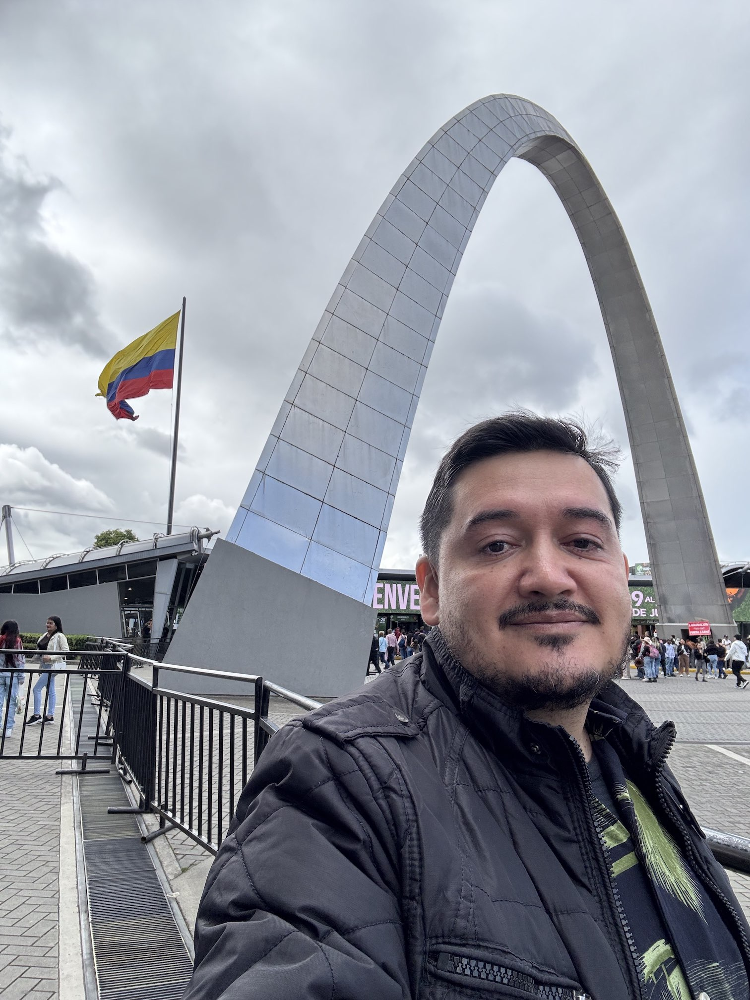

Mario A. Acero Ortega
Assistant Professor of Physics
Faculty of Natural Sciences, Universidad del Atlántico
Carrera 30 8-49 (Sede Norte), Puerto Colombia
Atlántico, Colombia
Email: marioacero@mail.uniatlantico.edu.co
About Me
I am broadly interested in connecting new theoretical ideas for physics beyond the Standard Model to present and near-future experiments. My research has been primarily focused on neutrino physics, an exciting and promising research area that will remain at the focus of experimental and theoretical inquiry for some time to come.
Research
I am currently a member of the NOvA Collaboration, working on different aspects of the long-baseline neutrino oscillation experiment at Fermilab. I am particularly interested in BSM effects on neutrino oscillations like sterile neutrinos, non-standard interactions, and neutrino decay. (Complete list of NOvA publications here.)
- Monte Carlo method for constructing confidence intervals with unconstrained and constrained nuisance parameters in the NOvA experiment, JINST 20 T02001 (2025)
- Search for CP-Violating Neutrino Nonstandard Interactions with the NOvA Experiment, Phys. Rev. Lett. 133 201802 (2024)
- Expanding neutrino oscillation parameter measurements in NOvA using a Bayesian approach, Phys. Rev. D110 012005 (2023)
I am also a member of the DUNE Collaboration, responsible for designing and building the next long-baseline neutrino oscillation experiment at Fermilab.
- DUNE Phase II: scientific opportunities, detector concepts, technological solutions, JINST 19, 12 P12005 (2024)
Education
-
PhD in Physics
University of Torino and University of Savoie (LAPTH)
-
Master in Science - Physics
Universidad Nacional de Colombia (Bogotá)
-
Physics degree
Universidad Nacional de Colombia (Bogotá)